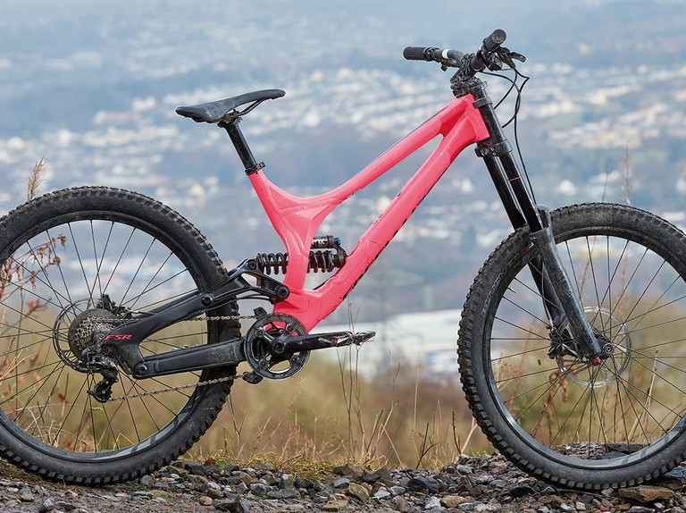

Las bicicletas de montaña
23/11/2022
Razones por las que elegi este tema
A lo largo de mi vida, siempre he sido una persona activa y con un gran interés por los deportes. En particular, las bicicletas y las bicicletas de montaña han sido una de mis mayores pasiones. En este ensayo, quiero compartir contigo mis motivaciones y razones para amar tanto este deporte. Desde que era niño, las bicicletas siempre me han parecido un medio de transporte fascinante. Me encantaba la libertad y la independencia que ofrecían, y el hecho de que podía ir a donde quisiera y explorar nuevos lugares. Cuando descubrí las bicicletas de montaña, mi amor por este deporte solo se hizo más fuerte. Me encanta la adrenalina que se siente al bajar por senderos estrechos y empinados, el desafío físico y mental que implica la subida, y la sensación de libertad y conexión con la naturaleza que se siente al estar en medio del bosque. Además, las bicicletas de montaña me han enseñado muchas lecciones valiosas. El ciclismo de montaña es un deporte que requiere habilidad, fuerza, resistencia y valentía. Para lograr superar los obstáculos y los retos que se presentan en los senderos, es necesario tener una actitud positiva, ser perseverante y estar dispuesto a enfrentar el miedo y la incertidumbre. Todas estas habilidades se pueden aplicar a otros aspectos de la vida, y el ciclismo de montaña me ha ayudado a ser una persona más fuerte, más valiente y más resiliente. Por otro lado, las bicicletas de montaña son una excelente forma de mantenerse en forma y de mejorar la salud. El ciclismo es un ejercicio cardiovascular de bajo impacto que puede mejorar la salud del corazón, reducir el riesgo de enfermedades crónicas, y mejorar la calidad del sueño. Además, la práctica del ciclismo de montaña también implica el fortalecimiento de los músculos de las piernas, los brazos, los hombros y la espalda, lo que puede mejorar la postura y la fuerza física general. Por último, el ciclismo de montaña es un deporte muy social. He conocido a muchas personas maravillosas a través de mi amor por las bicicletas de montaña, y he hecho amigos y conexiones que durarán toda la vida. El ciclismo de montaña es un deporte que se puede practicar en solitario, pero también es una gran oportunidad para conectarse con otros ciclistas y compartir la pasión por el deporte. En resumen, mi amor por las bicicletas y las bicicletas de montaña en particular, es impulsado por una combinación de factores. Me encanta la libertad y la independencia que ofrecen, el desafío físico y mental que implica el deporte, las lecciones valiosas que he aprendido a través de la práctica, los beneficios para la salud y el aspecto social de la práctica del ciclismo de montaña. En definitiva, el ciclismo de montaña es mucho más que un deporte para mí, es una forma de vida y una pasión que seguiré cultivando mientras pueda.

.jpeg)